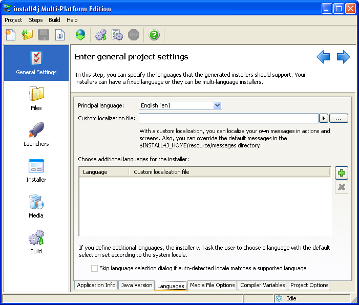

install4j Projects


install4j Projects |
|
install4j keeps a list of recently opened projects under Project->Reopen. By default, install4j opens the last project on startup. This behavior can be changed in the preferences dialog. You can pass the name of a project file as a command line parameter to install4j to open it on startup. Also, the command line compiler expects the project file name as its argument.
The following paragraphs give a high-level overview of the elements that you can configure in install4j. Each of the configuration sections in install4j as seen in the screenshot below represents a top-level concept in install4j.

Typically, a project defines the distribution of a single application. An application has an automatically generated application ID that allows installers to recognize previous installations.
At the core of the project definition is the sequence of installer screens and actions. They determine what the users see, what information they can enter and what the installer does. install4j offers a lot of flexibility regarding the configuration of of your installer. Besides creating traditional application installers, install4j is equally suited to create small applications that modify the target system in some way. The install4j runtime is localized into many languages. You can configure your installers to support one or multiple languages.
Most installers install files to a dedicated directory and optionally to several existing directories on the target computer. That's what the "Files" section in the install4j IDE is for. Here, you define a "distribution tree", and optionally "installation components" which can also be downloaded on demand. The actual installation of these files is handled by a special action (the "Install files" action) which is part of the default project template. If your installers should not install any files, you can remove that action and ignore the "Files" configuration section. When the the "Install files" action is executed, it creates an uninstaller. The uninstaller offers the same flexibility as the installer and is configured in the same way.
Unless the installed files are only static data, you will need application launchers to allow the user to start your application. You can define one or several application launchers in the "Launchers" section. Launchers generated by install4j have a rich set of configuration options including an optional splash screen or advanced features like a single instance mode. Configured launchers can also be "services" that run independently of logged-on users. install4j offers special installation screens and actions for services.
install4j has many advanced features concerning the runtime-detection or bundling of JREs. You define Java version constraints and a search sequence for both your installers and your generated launchers. In this way, you ensure that the launchers run with the same JRE as your installers. Bundling of JREs is configured on a per-media set basis and includes an optional on-demand download of a JRE.
Finally, the media file definitions define the actual executables that you distribute. They capture platform-specific information and provide several ways to override project settings. You typically define one media file for each platform. Multiple media files for the same platform can be added as needed. Media files are either installers or archives. Archives simply capture the launchers and the distribution tree. Archives are a limited way to create a distribution and might not be suitable if you rely on the flexibility that is offered by installers.
A project, and especially the definition of the installer and uninstaller, is very hierarchical and possibly quite complex. In order to check all your projects settings on a single page, or to print out your project definition, install4j offers a project report. This action is available from the menu and toolbar. When you generate a report, an HTML file is written to disk. In addition, a directory named install4j_images is created which holds all required icons. The export directory for project reports is remembered across restarts of install4j. install4j will suggest a file name based on the project name. If that file already exists, a number will be appended to make the file name unique.
|
|